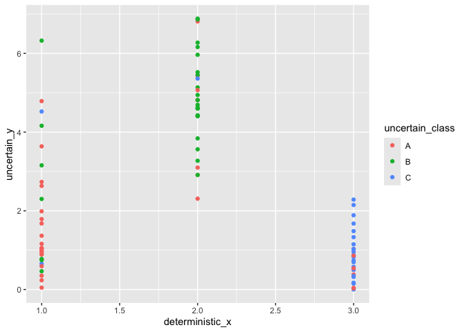

ggdibbler is an R package for implementing signal suppression in ggplot2. Usually, uncertainty visualisation focuses on expressing uncertainty as a distribution or probability, whereas ggdibble differentiates itself by viewing an uncertainty visualisation as a transformation of an existing graphic that incorperates uncertainty. The package allows you to replace any existing variable of observations in a graphic, with a variable of distributons. It is particularly useful for visualisations of estimates.
You provide ggdibbler with code for an existing plot, but repalace one of the variables with a distribution, and it will convert the visualisation into it’s signal supression counterpart.
Future additions to the package
The eventual goal of ggdibbler is to allows any distribution object to be passed to any aesthetic in a ggplot2 geom (so long as I have gotten to that geom). The status of this goal is regularly updated in the All Geometries - Status List issue.
I am happy to expedite any specific geoms that you might want, just post a request in a github issue.
Installation
You can install the stable version of ggdibbler from CRAN with:
# install.packages("pak")
install.packages("ggdibbler")or you can install the development version of ggdibbler from GitHub with:
# install.packages("pak")
pak::pak("harriet-mason/ggdibbler")Examples
In essence, ggdibbler makes visualising uncertainty easy, as you just replace the geom_* with geom_*_sample and replace your deterministic variable with a distributional variable, and you get an uncertainty visualisation. Woweee.
Typically, if we had an average estimate for a series of areas, we would simply display the average, or keep the average separate. Below is an example of this with a choropleth map.
# Make average summary of data
toy_temp_mean <- toy_temp |>
dplyr::group_by(county_name) |>
summarise(temp_mean = mean(recorded_temp))
# plot it
ggplot(toy_temp_mean) +
geom_sf(aes(geometry=county_geometry, fill=temp_mean)) +
scale_fill_distiller(palette = "OrRd")
We can use geom_sf_sample from the ggdibbler package to instead view each estimate as a sample of values from its sampling distribution. If you want to see the original geometry lines, I would recommend layering a geom_sf with NA fill over the top.
set.seed(1)
# sample map
toy_temp_dist |>
ggplot() +
geom_sf_sample(aes(geometry = county_geometry, fill=temp_dist), linewidth=0) +
geom_sf(aes(geometry = county_geometry), fill=NA, linewidth=1) +
scale_fill_distiller(palette = "OrRd")
Currently geom_sf only accepts a random fill, as it subdivides the geometry to fill it with a sample. This will eventually be extended to all the geom_sf aesthetics. Other geoms, such as geom_point_sample do accept random variables to any aes. You can feed any combination of random and deterministic variables to a geom_*_sample layer.
point_data <- data.frame(deterministic_x = c(1,2,3),
uncertain_y = c(dist_gamma(2,1),
dist_sample(x = list(rnorm(100, 5, 1))),
dist_exponential(1)),
uncertain_class = dist_categorical(prob = list(c(0.8,0.15,0.05),
c(0.25,0.7,0.05),
c(0.25,0,0.75)),
outcomes = list(c("A", "B", "C"))))
# A geom_point with random varianles
ggplot() +
geom_point_sample(data = point_data,
aes(x=deterministic_x, y=uncertain_y, colour = uncertain_class))
If you pass random variables to aesthetics like colour or label, but not position aesthetics such as x or y, you might want to add a jitter so that you can see all the points (otherwise you will only see one outcome of the sample).
ggplot() +
geom_point_sample(data = point_data,
aes(x=deterministic_x, y=deterministic_x, colour = uncertain_class),
position = position_jitter(width=0.1, height=0.1))